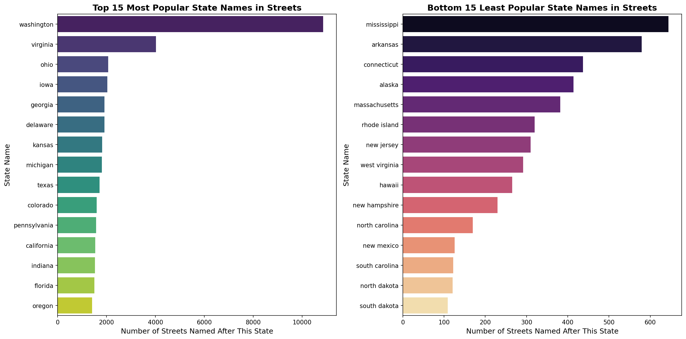
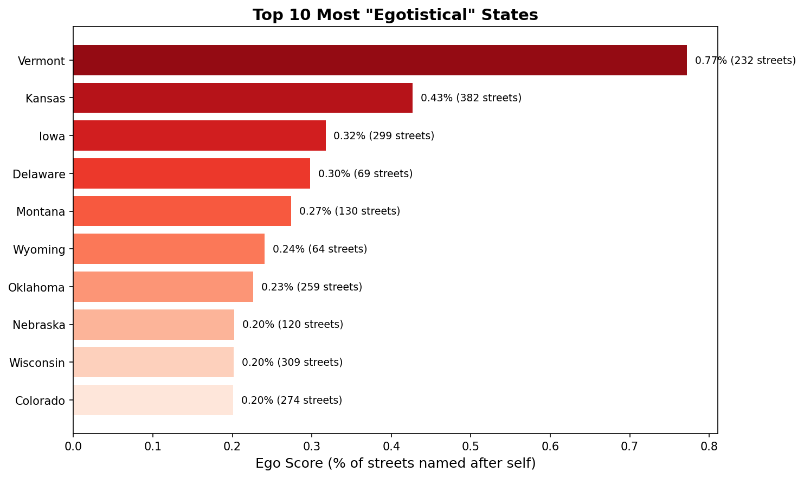
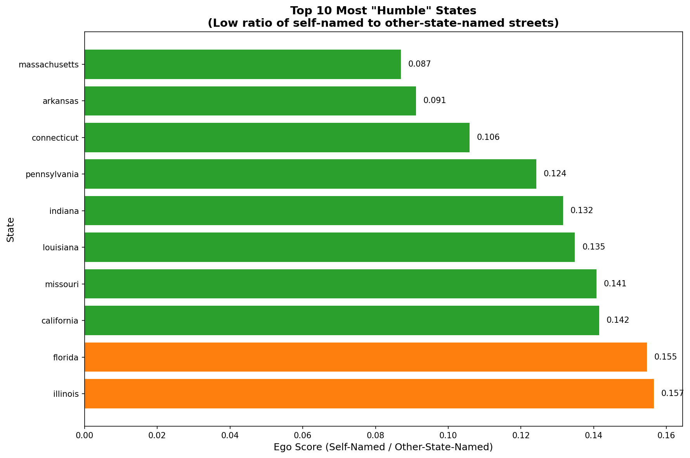
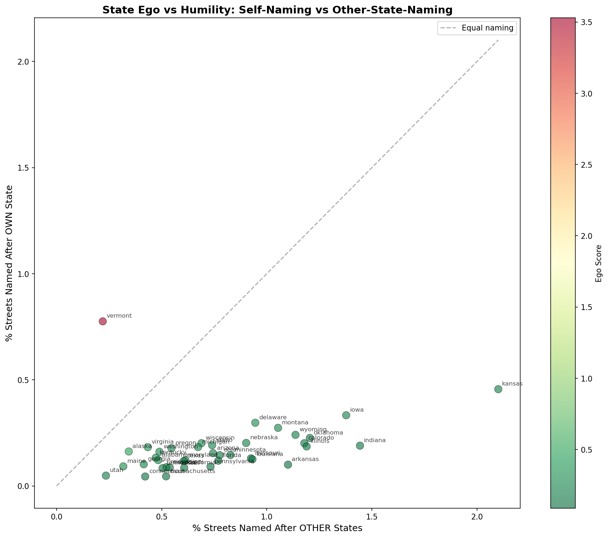

🗺️ Street Name Analysis Across All US States
A comprehensive analysis of street names across all 50 US states (7+ million streets),
examining which state names appear most frequently in street names and how states
balance naming streets after themselves versus other states.
7,154,657
Total Streets Analyzed
60,142
State-Named Streets
📊 Key Findings
Most Popular State Name: "Washington" appears in 10,865 street names nationwide -
more than 2.5x the second most popular state name!
Most "Egotistical" State: Vermont has an ego score of 3.53, naming streets
after itself 3.5x more often than after other states.
Most "Humble" State: Massachusetts has an ego score of 0.087, naming streets
after other states 11.5x more often than after itself.
🗺️ Interactive Maps
National State Streets Map
Interactive map showing 50,000 streets with state names across the entire country
Open Map →
State Ego Score Map
Choropleth showing which states are most "egotistical" vs "humble"
Open Map →
State Name Popularity Map
Bubble map showing how popular each state's name is nationwide
Open Map →
Self-Naming Percentage Map
Map showing % of streets named after the state itself
Open Map →
Other-State-Naming Map
Map showing % of streets named after other states
Open Map →
California State Streets
Streets with state names in California
Open Map →
Texas State Streets
Streets with state names in Texas
Open Map →
Delaware State Streets
Streets with state names in Delaware
Open Map →
📈 Visualizations
State Name Popularity

Most Egotistical States

Most Humble States

Ego vs Humility Scatter Plot

📁 Data Files
State Name Popularity Data
CSV file with street counts for each state name
Download CSV →
State Ego/Humility Data
CSV file with ego scores and naming statistics
Download CSV →
📖 Methodology
Data Source: OpenStreetMap data for all 50 US states
Total Streets: 7,154,657 street segments analyzed
Analysis: Pattern matching for all 50 US state names in street names
Ego Score: Ratio of streets named after the state itself vs. streets named after other states
- High ego score (>0.5): State names many streets after itself
- Low ego score (<0.15): State names many streets after other states